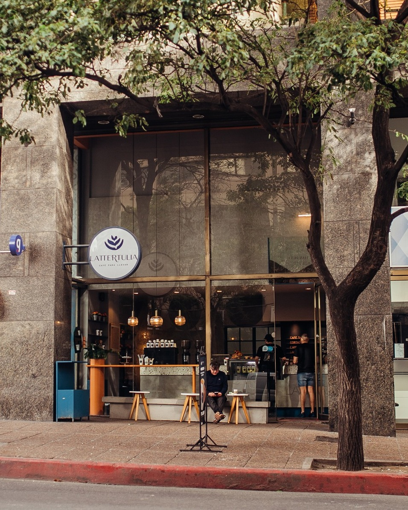
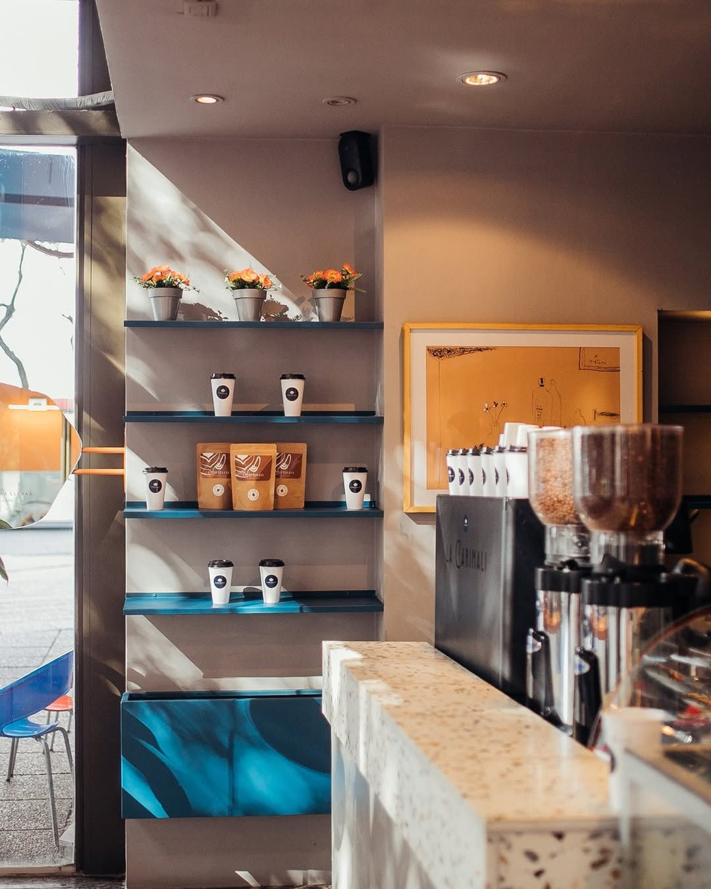
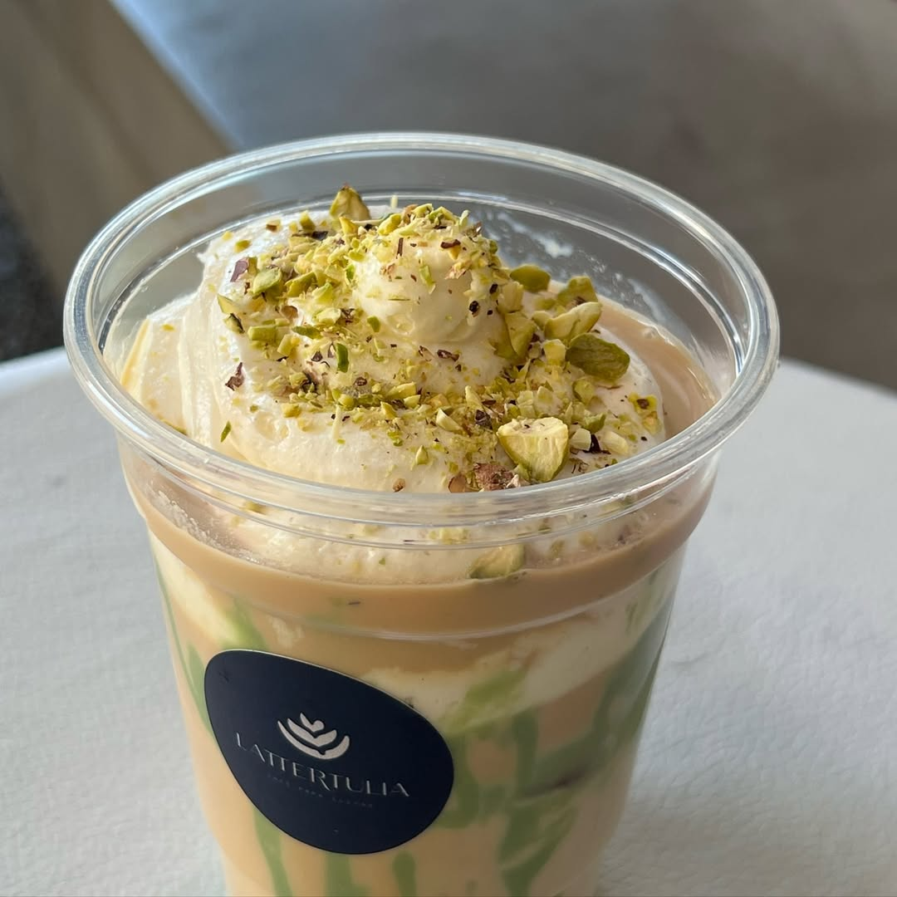
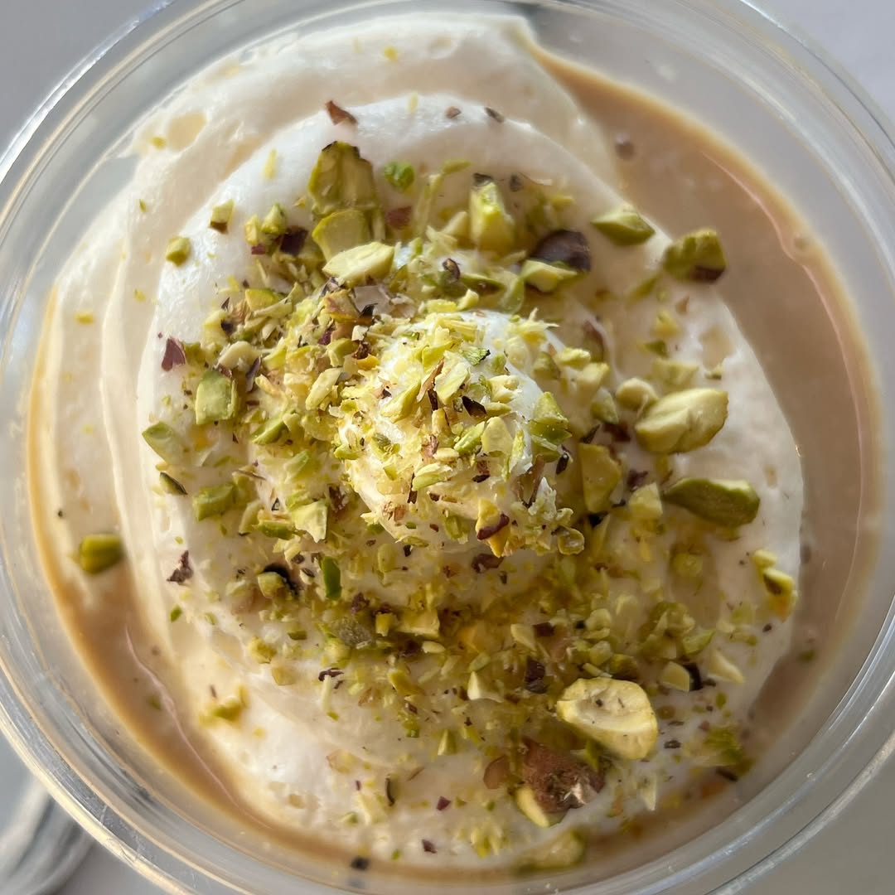
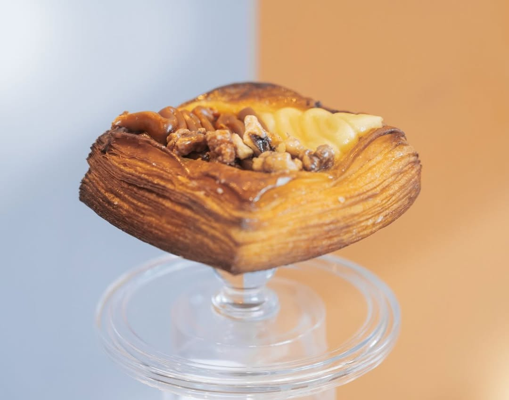
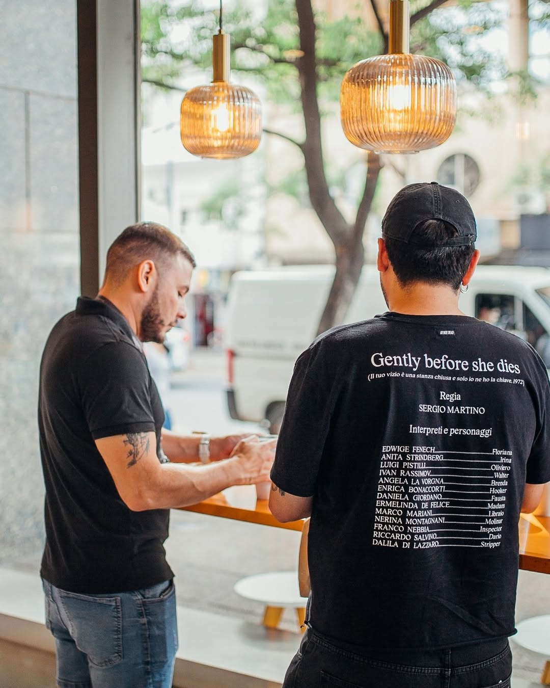

Nueva Córdoba · Argentina
Café de
Especialidad.
Viennoiserie y Pastelería
Un espacio para el café de origen único, la pastelería artesanal y el tiempo bien vivido.

Lo que preparamos
Nuestra carta.
Clásicos
Americano
Espresso con agua caliente. Limpio y profundo.
Cortado
Espresso con una nube de leche texturizada.
Flat White
Doble ristretto con leche microespumada sedosa.
Latte
Espresso con leche vaporizada y arte latte.
Capuchino
Equilibrio clásico entre espresso, leche y espuma.
Especiales
Caramel Latte
Espresso con caramelo artesanal y leche vaporizada.
Pistacho Latte
Especial de la casa. En caliente o frío con crema.
Avellana Latte
Latte con pasta de avellana y espuma suave.
Dulce de Leche Latte
Sabor argentino, preparación italiana.
Submarino
Chocolate caliente con espresso. Clásico invernal.
Fríos
Iced Latte
Espresso sobre leche fría con hielo.
Iced Pistacho
El clásico de la casa en versión helada con crema.
Espresso Tónico
Espresso sobre agua tónica con twist de cítrico.
Orange Coffee
Espresso con jugo de naranja natural y hielo.
Red Tonic
Tónica con frambuesa y espresso. Refrescante.
Viennoiserie & Pastelería
Croissant Bicolor
Hojaldre fresco con manteca francesa, dorado perfecto.
Danesa Crumble Arándanos
Hojaldre con crumble y arándanos frescos.
Roll de Canela
Masa brioche, canela y glaseado de queso crema.
Pan de Chocolate
Hojaldre con chocolate belga de alta calidad.
Tarta Coco y DDL
Tarta de coco con dulce de leche y base crocante.
Budín Limón y Amapola
Húmedo, cítrico, con glaseado de limón y semillas.
Consultá nuestra carta completa con precios en el local o en nuestro Instagram.

Nuestra historia
Más que café.
Un ritual.
Lattertulia nació de la convicción de que el café de especialidad merece un espacio propio: uno donde la calidad, el origen y el proceso sean los protagonistas.
Cada taza recorre un camino desde pequeños productores seleccionados hasta las manos de nuestros baristas. En nuestro salón de Nueva Córdoba, el tiempo corre diferente.
La viennoiserie y la pastelería artesanal completan la propuesta: horneado fresco cada mañana, siempre con ingredientes de primera.
Ambiente y productos
La experiencia.






Dónde encontrarnos
Visitanos
en Córdoba.
Dirección
José Manuel Estrada 284
Nueva Córdoba, Córdoba, Argentina
Horarios
También hacemos
Take Away